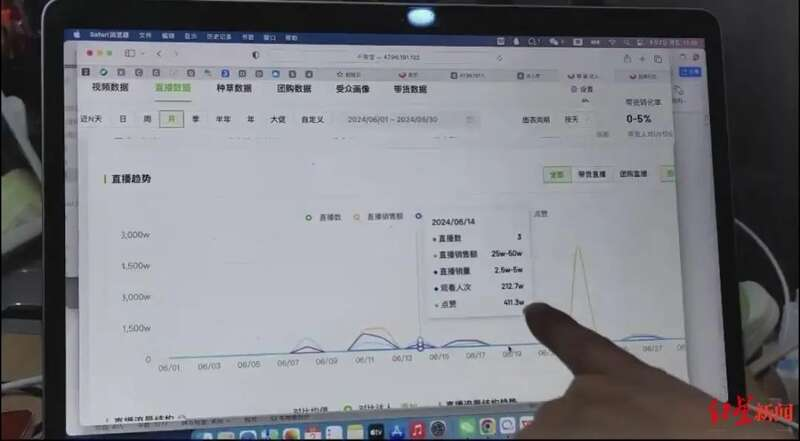
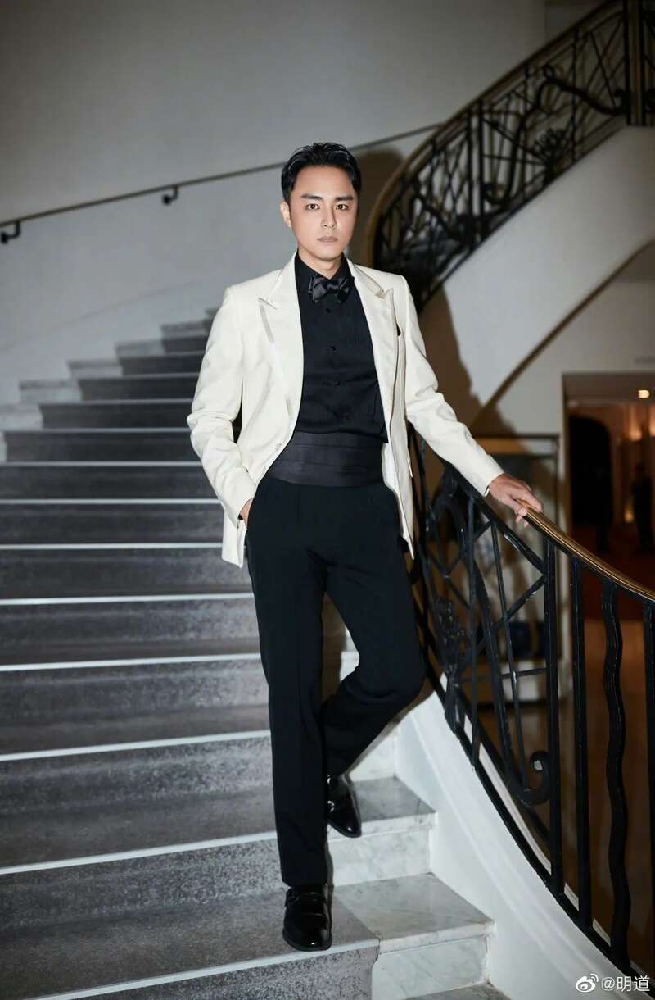
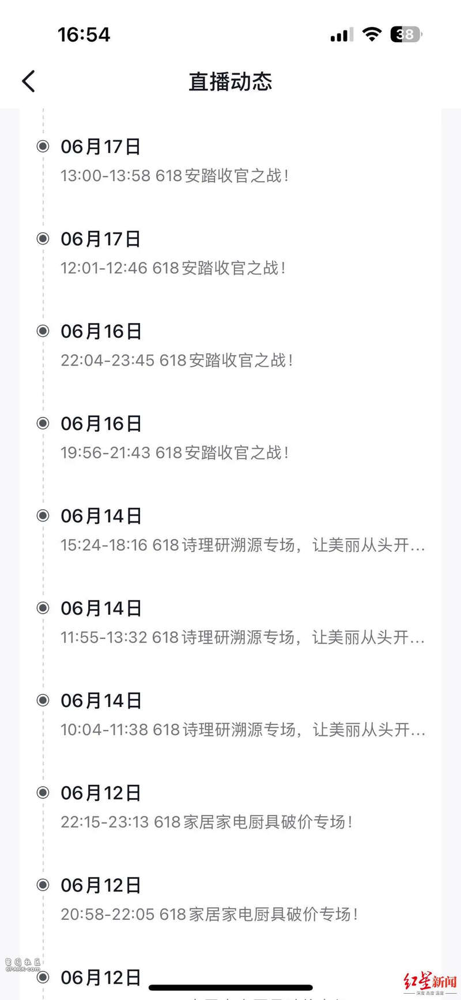
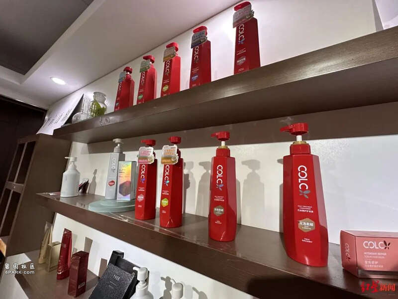
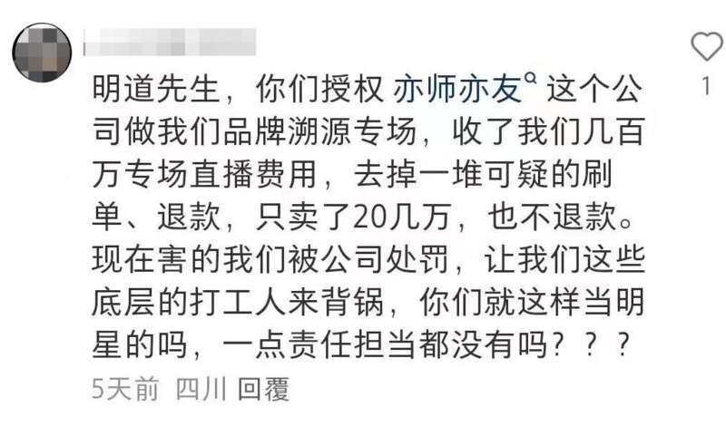

“我们‘618’期间花了几百万找明道做专场直播，结果，去掉退款就只卖出去20多万，费用相差太大，连十分之一都没到，我们希望能按比例退款。”四川绿色本草科技发展有限公司（以下简称本草公司）相关负责人杨女士告诉红星新闻记者。
对此，明道所在的杭州无忧传媒有限公司（以下简称无忧公司）表示，他们给出延长直播切片使用期限、继续为其直播带货等售后方案，但对方的唯一诉求就是退款，还找“网络水军”进行攻击，公司已如约履行合同，若无法妥善解决，他们也准备起诉维权。
花300万请明星带货产出比不符欲维权
随着网络电商的兴起，请明星直播带货成为诸多品牌的选择。本草公司旗下的诗理研洗发水是去年上新的品牌，今年“618”期间，也想通过明星带来一定流量以及销量。
他们通过第三方中介公司安徽亦师亦友文化传媒有限公司（以下简称亦师亦友公司）联系上无忧公司，最终确定于6月14日，由旗下艺人明道为品牌进行专场直播。亦师亦友公司代表本草公司与无忧公司签订的合同金额为243.8万，包含专场费以及商业化投放费用。本草公司称，他们实际向亦师亦友公司支付了300万元。
直播当天，明道从上午10点左右播到下午6点左右，共计直播6小时01分，实时观看人数1万以上，总观看人次达212.7万，本草公司也为此准备了5万单产品。但大量的观看人数并未带来大量成交订单，整场直播下来，销售额仅34.8万，而且在直播后的1个月内产生大量退货，“退货率达一半以上。”实际销售量仅2000余单，共计20余万。

▲当日的直播数据
本草公司相关负责人杨女士告诉记者，当初决定让明道来做直播也是考察其历史销售数据不错。由于当初没有签保量合同，“他们只愿意进行售后，不愿意退款。”售后方案包括可以延长使用明道直播时的画面，允许使用艺人的专属链接继续售卖产品，以及继续给至少10次的混场直播带货。但杨女士表示售后方案只是口述，没有任何合同保障，因此双方未达成一致。
在合同中记者看到，无忧公司并未对推广销售额作出承诺。杨女士说，他们最开始也想签保量合同，但对方说明道的历史数据都是看得到的，“没有签。”她认为，从数据来看，明道的带货能力是不错，但给他们带货效益很低。
明道生于1980年，因出演《天国的嫁衣》《王子变青蛙》等电视剧被大家熟知，目前在抖音平台拥有800余万粉丝。

明道 资料图
记者在“蝉妈妈”“飞瓜”等第三方数据平台看到，明道属于抖音的“头部达人”，今年1-8月，带货销售额已超1亿。从6月来看，其每天的带货销售额有一定起伏，有几十万，也有几千万，诗理研洗发水的销售量几乎垫底。

▲明道账号的直播动态，6月14日为诗理研溯源专场直播
艺人公司：新品牌知晓度不高未承诺销量，希望友好协商
对于此次销量不高的问题，无忧公司相关负责人表示，首先诗理研是新品牌，消费者对它的知晓度不高。
在该负责人看来，某种意义上来说，这已经不是一场纯粹的直播带货，而是一场以品宣效果为主的直播，“说白了，就是明道去给客户做品牌宣传，如果一开始就让我们承诺销售额，我们是不会做的。”他们当时从杭州带了20人的团队去南昌工作了4天，直播中还花了50万投流，这些都是成本。艺人在直播间做了六个多小时的品牌宣传是有价值的，不能因为没有达到预期，就要求退款。
对于退货率问题，相关负责人表示，他们并未刷单，且退货并不只是艺人的问题，其中涉及发货、包装以及消费者对产品的信服度等。

▲诗理研洗发水
亦师亦友公司负责人储先生表示，虽然合同是他代表本草公司和无忧公司所签，但在整个谈判过程中，对明星的考量、对公司的分析以及对合同金额的约定、是否签订保量合同等，都是三家公司一起谈的，“不存在有什么猫腻。”合同中的权益，包括直播时长、投流金额、灯光等，无忧公司也已完成，“现在让我去沟通退全款，人家（无忧公司）都完成了，怎么可能会退钱。”而且都是签了合同的。
他说，事情发生后，他也一直站在品牌方的角度与无忧公司针对售后问题进行沟通，无忧公司也愿意配合解决，并给出了上述解决方案，“但品牌方不同意，在明道账号下评论，发展舆情……”让他以及无忧公司的压力都很大。
无忧公司认为，对方试图以明星的名誉作为要挟，是非常不妥的做法。接下来，公司还是会与品牌方进行沟通，也会履行售后承诺。但若继续对艺人形象进行诋毁，他们也会用法律手段维权。
随后，无忧公司发来所谓的“网络水军”的聊天截图。记者看到，有疑似本草公司员工的网友在明道视频下方评论。
对此，本草公司表示他们未收买“网络水军”进行网络攻击，但的确因此事处理了部分员工。与无忧公司的问题，未来也不排除使用法律手段来解决。

▲网友评论截图
业内人士：新品慎选带货方式注意甄别合同
在从事直播带货行业的梁女士看来，若诗理研的确是一个新产品，用高价请明星直播是一件比较冒险的事，且不说主播刷单、刷数据问题，粉丝或网友不会仅因明星效应而为产品买单，还会考量产品的知名度、安全性，在直播间的折扣、赠品等因素。
一般大主播都很少做专场，要么做自己品牌的专场，要么只做大牌专场，因为对一般品牌来讲，专场性价比不高，她建议做混播带货，“虽然佣金会高一些，但也好过在没有知名度时被很多人一扫而过。”
根据公开报道，明星带货时也有“翻车”案例。
去年11月，安徽一家公司向演员杜某东授权方公司缴纳了3.3万元坑位费，但最终只卖出一包木耳，销售额64.9元；歌手叶某茜直播卖茶具，在线观看人数近90万，只卖出不到2000元；明星杨某、黄某依夫妇作为嘉宾参加年货节卖货，有商家交了10万元坑位费，准备了价值170万元的腊肉，最后仅卖出一单……有业内人士表示，明星的流量并不等于销量，直观来看，主播的直播话术、互动能力、控场能力都是影响带货的因素。
梁女士说，对于拿50万用于流量投放，在线人数一直涨，销量却涨不起来，可能投流方式有问题，有时全范围投流实际是无用流量，而精细投流虽然要贵一些，但购买力更强。
她也提到，目前许多MCN机构会存在阴阳合同、霸王条款等问题，“坑很多”，梁女士建议品牌方在签合同时要注意甄别，让专业人士进行风险把控。双方提到的售后保障问题也要写进合同，不能口头答应。比如可以提出没达到一定销量可以按比例退钱等。她说，该事件中，无忧公司的售后就是“在保一部分量”，但没写进合同，品牌方就会显得比较被动。